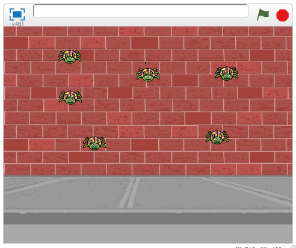
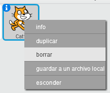
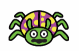
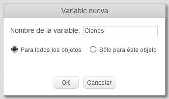
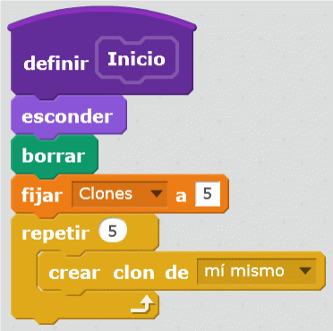
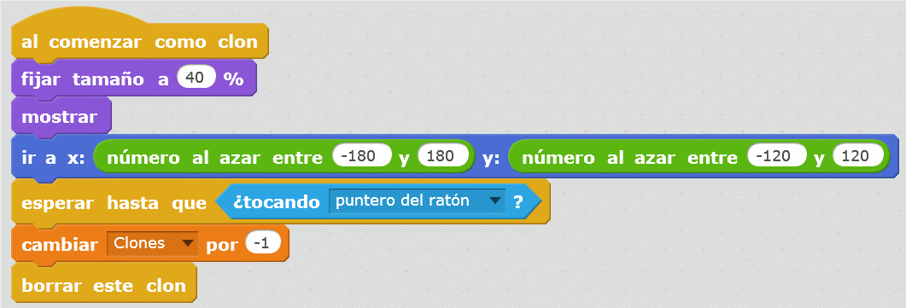
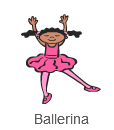
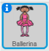
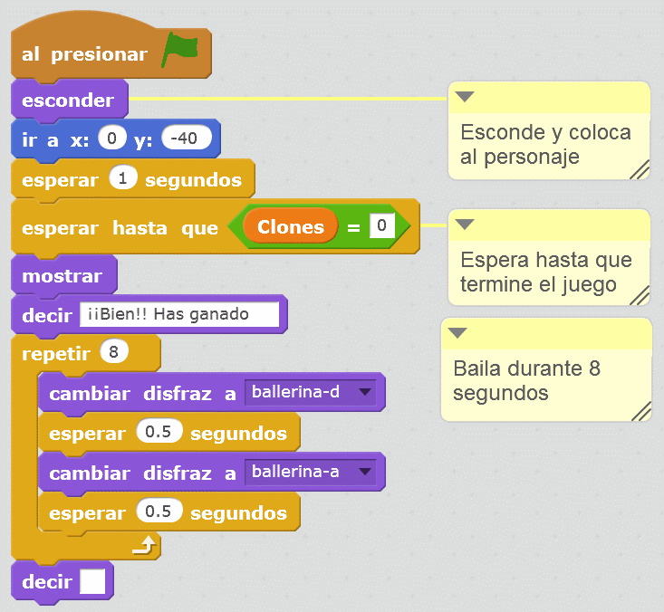

4. Atrapar bichos¶
{kind=link}
En esta práctica vamos a programar un juego que consiste en atrapar todos los escarabajos que aparecen en la pantalla. Una vez atrapados, ganamos el juego y un personaje nos avisa de ello.
Iniciamos el editor de Scratch.
Borramos el gato presionando sobre él con el botón derecho del ratón y luego pulsamos borrar.

A continuación añadimos un nuevo personaje, un escarabajo.
Pulsamos el botón de nuevo objeto

A continuación pulsamos en Categoría Animales.
Luego seleccionamos el objeto Ladybug2.
Ahora crearemos la variable Clones
Dentro de la pestaña Datos
 ,
,pulsamos crear una variable

Cambiamos el nombre de la variable a Clones
Por último pulsamos el botón OK
Esta variable contará el número de escarabajos que hay en la pantalla. Cuando esta variable valga cero, el juego terminará.
En la pestaña de programa crearemos una nueva función llamada Inicio
Primero pulsamos en el botón más bloques

A continuación pulsamos en crear un bloque

Luego cambiamos el nombre del nuevo bloque a Inicio

Por último pulsamos el botón OK
Ahora programamos la función Inicio con las siguientes órdenes.
Este programa esconde el escarabajo, borra la pantalla y coloca cinco clones del escarabajo en la pantalla.
En este punto añadimos las instrucciones para que cada clon del escarabajo aparezca en un lugar distinto de la pantalla con tamaño pequeño. Cuando el puntero del ratón toque a un escarabajo, este desaparecerá.
Para comprobar que todo funciona correctamente, pulsamos inicio con doble clic y aparecerán cinco escarabajos en la pantalla. Los escarabajos deben desaparecer cuando el puntero del ratón les toque.
Para que el juego funcione normalmente, programamos la función que hará aparecer escarabajos cada cierto tiempo hasta que termine el juego.

Ahora tenemos que escoger un fondo adecuado para el juego. Cambiamos el fondo de escenario a una pared de una calle.
Pulsamos el botón de Fondo nuevo.

A continuación pulsamos en Tema Ciudad.
Luego seleccionamos el fondo brick wall 1.
La pantalla quedará de la siguiente manera.

Por último vamos a programar un personaje que avise del final del juego. En este caso se ha escogido a una bailarina.
Pulsamos el botón de nuevo objeto
A continuación pulsamos en Categoría Gente.
Luego seleccionamos el objeto Ballerina.
En la pestaña de programa del nuevo personaje
añadimos las siguientes instrucciones.
Ahora al finalizar el programa aparecerá la bailarina para felicitarnos.
{kind=link}
{kind=link}
{kind=link}
Ejercicios¶
- Añade una nueva regla al juego. Si el número de escarabajos es mayor que 25, entonces perdemos el juego. El programa se detiene y un personaje nuevo nos avisa de que hemos perdido.